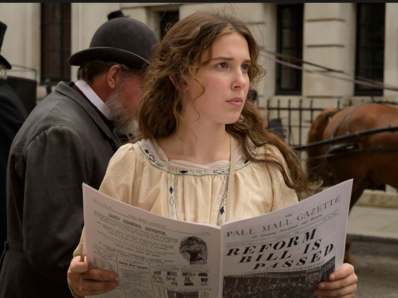

Suspense, Mystery, Action, Adventure

Helena Bonham Carter
Louis Partridge
Burn Gorman
Adeel Akhtar
Susan Wokoma
Frances de la Tour
Fiona Shaw
While searching for her missing mother, intrepid teen Enola Holmes uses her
sleuthing skills to outsmart big brother Sherlock and help a runaway lord.
Enola Holmes (2020) follows Sherlock Holmes’ teenage sister, Enola, who escapes her brothers’ plans to send her to finishing school and instead travels to London to search for her missing mother,
only to become entangled in protecting a runaway lord from assassination while uncovering a political conspiracy.Raised by her eccentric mother Eudoria to be independent and clever, Enola wakes on
her sixteenth birthday to find her mother gone, leaving cryptic clues. Refusing to conform to Victorian expectations, she disguises herself and flees to London, where she meets Viscount Tewkesbury, a
young noble targeted by killers. As she helps him survive, Enola discovers that his life is tied to reformist politics in the House of Lords, with his grandmother plotting against him to preserve
traditional power. Outwitting both assassins and her famous brother Sherlock, Enola proves her resourcefulness, ultimately choosing to forge her own identity as a detective rather than live under her
brothers’ control.